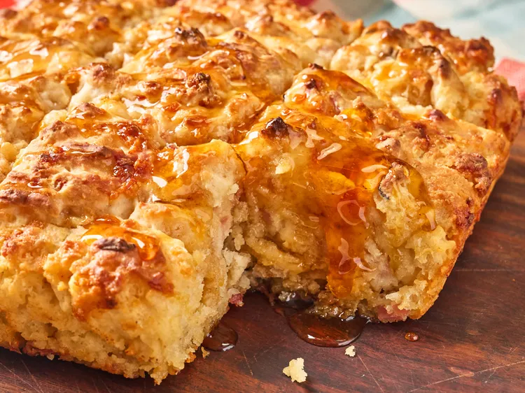

Hot Honey Ham and Cheese Butter Swim Biscuits

Description
These hot honey ham and cheese butter swim biscuits are made with homemade dough studded with ham and sharp Cheddar cheese. Baked in a pool of melted butter and finished with a drizzle of hot honey, they deliver a perfect sweet-savory bite. They'll be the talk of the potluck.
ingredients
- 2½ cups all-purpose flour
- 1 tablespoon baking powder
- 1 tablespoon sugar
- 1¾ cups buttermilk
- 2 cups diced ham
- 1½ cups shredded cheddar cheese
- ½ cup (1 stick) salted butter
- 2–4 tablespoons hot honey (for drizzling after baking)
preparation
- Preheat the oven to 450°F (232°C).
- Mix flour, baking powder, sugar, and buttermilk until a thick batter forms.
- Fold in the diced ham and shredded cheddar cheese.
- Pour melted butter into a baking dish.
- Spread the batter evenly over the butter.
- Score the batter into squares using a knife.
- Bake for 20–30 minutes until golden brown.
- Drizzle hot honey over the biscuits before serving.